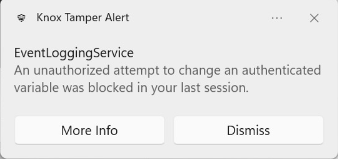

Extending Below-the-OS Security into the OS
Last updated November 12th, 2024
Having established a secure Below-the-OS platform, it’s critical to extend security into the OS. Several security-sensitive operations, such as logging, occur either in the OS kernel or in processes. For robust security, Below-the-OS platform components need to integrate with and protect these security-critical OS components.
Samsung Galaxy Books with the Knox security platform have special Below-the-OS security features to protect security-critical OS components from tamper, and to integrate Below-the-OS security events into Windows event logs.
Samsung Security Service Tamper Protection using Below-the-OS
Malware and ransomware often try to kill, disable, and uninstall security components such as logging services to evade detection. Therefore, it’s important to protect such services from tamper. However, protection is especially challenging since Windows malware often executes with elevated system privileges, allowing malware to easily kill and uninstall security-related services.
Samsung’s Security Service handles critical operations such as logging. Thus, it’s important that the Samsung Security Service remains protected from tamper.
This protection begins at boot-time and extends through run-time. During boot-time, as shown in Figure 6, the UEFI and BIOS securely reinstalls Samsung’s Security Controller Driver and the Samsung Security Service if either of these are uninstalled or not present. It does this by using a standard Windows mechanism called the Windows Platform Binary Table, or WPBT, during boot. This process verifies that the security driver and service binaries are signed by Samsung before starting them.
Figure 6: Samsung Security Service Tamper Protection from Below-the-OS.
The Security Controller Driver and Security Service binaries are embedded into the UEFI image, and are thus immune from file system tampering. At run-time, the Samsung Security Controller Driver monitors and protects the Security Service by using layered defense mechanisms. If the Security Service process is somehow stopped, the Security Controller Driver is notified through callbacks and instantly restarts the service. The Security Service binary is itself compiled with protection against run-time attacks such as code or DLL injection using various defense-in-depth techniques.
Event integration with Windows Event Viewer
Another important aspect of extending Below-the-OS security into the OS is to make sure that Below-the-OS security events are appended to existing OS logs in a secure manner. Samsung’s Below-the-OS and in-OS security components generate boot-time and runtime security events that are stored in logs in persistent and secure SPI flash memory.
The Security Service’s Event Logging Service appends these events to Windows Event Logs, which can be viewed using the Windows Event Viewer. To ensure that event logging can’t be bypassed, the Event Logging Service is started on every boot and is protected from tamper or shut-down at run-time. For more details, see Samsung Security Service Tamper Protection.
The Event Logging Service logs several types of security events and information that can be viewed using the Windows Event Viewer under a dedicated “Samsung Security” application event log section. The following events are available:
-
Below-the-OS security events such as Tamper Alerts, BIOS Auto Recovery and BIOS Configuration Recovery attempts, unauthorized writes to BIOS Variables and protected SMM areas, and suspicious SMI calls.
-
In-OS security events such as uninstalls, unloads of security-critical components such as the Security Service, and writes to security-critical registry keys.
-
Security state of the system, such as the security software version information, enable/disable status of security-relevant BIOS settings, and variables such as Secure Boot, Advanced SMM Protection, SMI Guard, and TPM activation status.
For a complete list of security events integrated into the Windows Event Viewer, refer Table 1.
Event severity levels are one of Information (normal but security-relevant events), Warning (notice of abnormal events that have been automatically resolved), and Error (unrecoverable events that need administrator action).
User notifications
When certain security-critical events happen at runtime, in addition to being logged, the user is notified of the event through a toast notification in Windows. The user has the option to obtain more information or dismiss the event, as seen in Figure 7.

Figure 7: Notification of a Tamper Alert
List of Security Events
Table 1 shows a summary of the security events logged to the Windows Event Viewer, along with their IDs. The logged events contain additional event-specific details and mapping to the MITRE ATT&CK knowledge base, where you can learn more about specific techniques corresponding to potential attack scenarios.
Table 1
| Hardware Root-of-Trust | BIOS Auto Recovery has occurred | 0x301-0x3031 |
| The recovery BIOS image has been updated | 0x3041 | |
| Error in BIOS Auto Recovery | 0x3FE1 | |
| Error in the secure communication channel with SecEP | 0x3FF2 | |
| Failed to store or retrieve from SecEP flash storage | 0x306-0x3081, 0x308-0x30A2 | |
| Boot device verification fail (db, dbx, other) | 0x4301, 0x4311, 0x4322 | |
| Default keys provisioned for secure boot, device in user mode | 0x6002 | |
| Failed to provision default keys for secure boot, device still in setup mode | 0x6012 | |
| Secure boot BIOS Variables were deleted | 0x6022 | |
| Secure boot keys changed to default | 0x6032 | |
| Critical secure boot configuration was removed (PK, KEK, DB, DBX) | 0x610-0x6132 | |
| Critical secure boot configuration was set (PK, KEK, DB, DBX) | 0x614-0x6172 | |
| Critical secure boot configuration was appended to (KEK, DB, DBX) | 0x618-0x61A2 | |
| BIOS Configuration Recovery | Corrupted BIOS Variable detected | 0x4001, 0x403-0x4062, 0x4402, 0x4442, 0x906-0x90D2 |
| Failed to recover corrupted BIOS Variable | 0x4011, 0x4412, 0x4452, 0x966-0x96D2 | |
| Successfully recovered corrupted BIOS Variable | 0x4021, 0x4422, 0x4462, 0x936-0x93D2 | |
| Error enabling BIOS Configuration Recovery | 0x4071, 0x4472, 0x4092 | |
| Error disabling BIOS Configuration Recovery | 0x4082, 0x4432 | |
| Tamper Alerts | Tamper Alert log is full | 0x4101 |
| Tamper Alert count is invalid | 0x4111 | |
| Tamper Alerts are cleared | 0x4121 | |
| Attempt to boot unallowed, known-vulnerable, or unsigned OS | 0x1001, 0x1011, 0x1192 | |
| Unauthenticated attempt to write to BIOS Variable (PK, KEK, DB, DBX) | 0x102-0x1051 | |
| Corruption of Tamper Flag detected | 0x10B1 | |
| Advanced SMM Protection detected invalid write to SMM memory | 0x10D1 | |
| Security Service was uninstalled | 0x10E1 | |
| Invalid SMI Guard rule detected | 0x10F1 | |
| The Windows Platform Binary Table (WPBT) is disabled | 0x1131 | |
| Invalid BIOS Password entered 3 times | 0x1151 | |
| Write to SecEP internal storage failed | 0x1161 | |
| Write to SecEP external storage failed | 0x1171, 0x1181 | |
| SMI Guard | Malformed SMM request detected by SMI Guard rule | 0x4201 |
| Security Service and Security Controller Driver | Security Controller driver loaded | 0x5001 |
| Security Controller driver unloaded | 0x5011 | |
| Security Service was killed but restarted | 0x5021 | |
| Security Service loaded | 0x5041 | |
| Security Service started | 0x5051 | |
| Security Service stopped | 0x5061 | |
| Security Service shutdown | 0x5071 | |
| Security Service has unhandled exceptions | 0x5081 | |
| Security Service or Controller Driver was installed | 0x7001 | |
| Failed to install Security Service or Controller Driver | 0x7011 | |
| Failed to clean up after Security Service or Controller Driver install | 0x7021 | |
| Reboot required after Security Service or Controller Driver install | 0x7031 | |
| Security Service or Controller Driver was validated after install | 0x7201 | |
| Failed to validate Security Service or Controller Driver after install | 0x7211 |
1 This security event is supported on Galaxy Book4 and later models with the Knox security platform.
2 This security event is supported on Galaxy Book 5 and later models with the Knox security platform.
On this page
Is this page helpful?